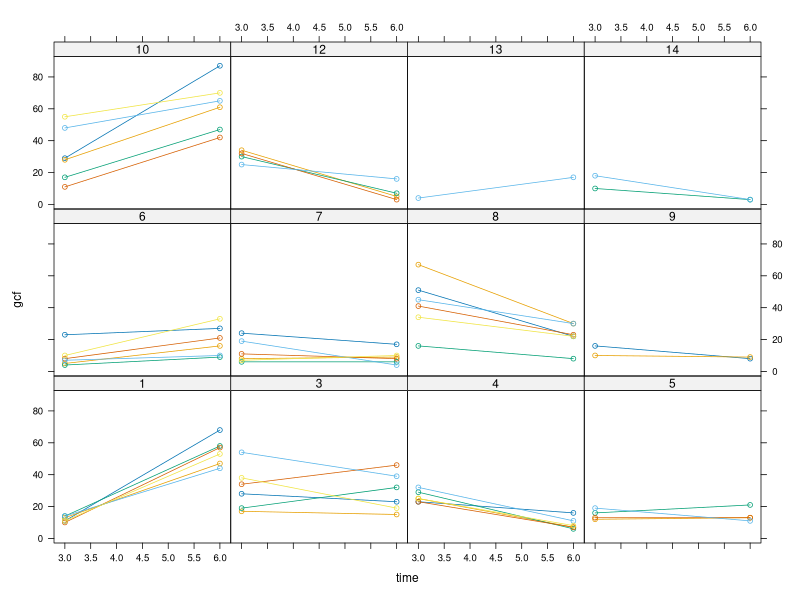
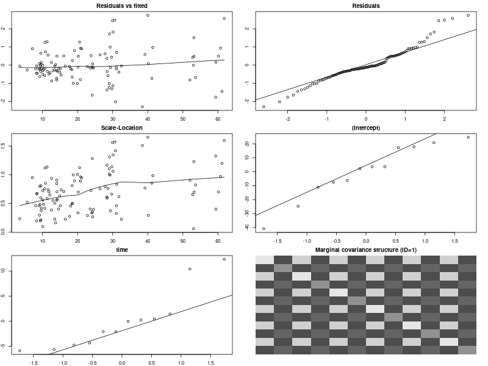
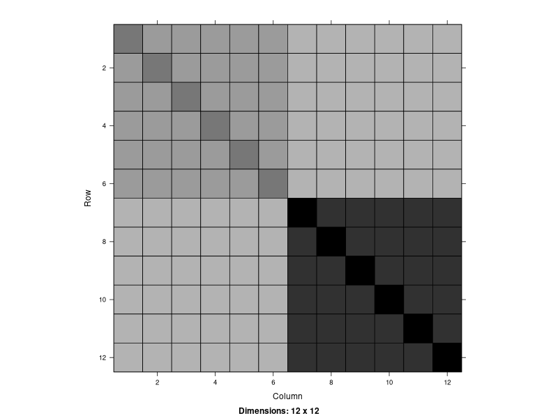
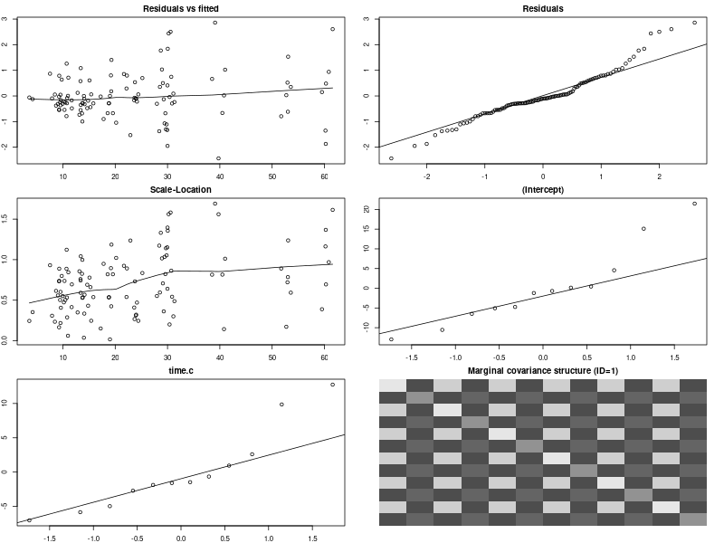
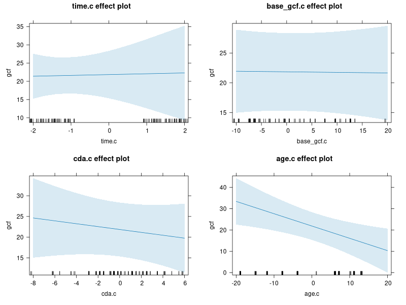

PCHN63112 Workshop: Clustered Longitudinal Data Example#
In this example,we will examine building a mixed-effects model for longitudinal data that are also clustered. This will demonstrate how the multilevel framework extends beyond two levels, as well as how this can be integrated into a mixed-effects model. This is also a larger example, especially when interactions are considered. This will lead to a more complex expression for the model, but one which is a simple generalisation of other examples we have seen.
Loading Packages#
We will start by loading all the packages that we need at the beginning. This will tidy-up the output, allow any messages or warnings to not clutter up the rest of the output and not bury any packages within the main body of the analysis. We also use source() on the file plot-lme.R. This needs to be in the current working directory and will bring the custom function plot.lme() into scope.
library('lattice') # plotting functions
library('Matrix') # covariance extraction and visualisation
library('nlme') # mixed-effects modelling
library('car') # Asymptotic ANOVA tests
library('effects') # Effects plots from the model
source('plot-lme.R') # custom plot.lme() function for making assumptions plots
Loading required package: carData
Registered S3 method overwritten by 'lme4':
method from
na.action.merMod car
Use the command
lattice::trellis.par.set(effectsTheme())
to customize lattice options for effects plots.
See ?effectsTheme for details.
The Dental Veneer Data#
The data we will use concern measurements of Gingival Crevicular Fluid (GRF) taken adjacent to newly placed dental veneers. In this study, researchers were interested in subsequent gum health after ceramic veneers were fitted to different teeth in a selection of patients. These veneers are designed to hide discolouration and are attached by first removing some tooth surface and then using a special adhesive to secure the veneer in place. Of particular interest was whether any difference in contour between the original tooth and the veneer was associated with increased levels of GRF over time. The researchers took measurements of GRF at the time when the veneers were fitted (the baseline GRF) as well as measurements 3 months and 6 months post-treatment.
The data can be downloaded from here. Once downloaded to the current working directory, the code below will read the data into R and then print values for all the teeth from the first two patients.
veneer <- read.table('veneer.dat', header=TRUE)
veneer[1:24,]
patient tooth age base_gcf cda time gcf
1 1 6 46 17 4.666667 3 11
2 1 6 46 17 4.666667 6 68
3 1 7 46 22 4.666667 3 13
4 1 7 46 22 4.666667 6 47
5 1 8 46 18 5.000000 3 14
6 1 8 46 18 5.000000 6 58
7 1 9 46 12 3.333333 3 10
8 1 9 46 12 3.333333 6 57
9 1 10 46 10 8.666667 3 14
10 1 10 46 10 8.666667 6 44
11 1 11 46 17 5.666667 3 11
12 1 11 46 17 5.666667 6 53
13 3 6 32 3 7.666667 3 28
14 3 6 32 3 7.666667 6 23
15 3 7 32 4 11.000000 3 17
16 3 7 32 4 11.000000 6 15
17 3 8 32 3 10.666670 3 19
18 3 8 32 3 10.666670 6 32
19 3 9 32 10 10.000000 3 34
20 3 9 32 10 10.000000 6 46
21 3 10 32 11 9.333333 3 54
22 3 10 32 11 9.333333 6 39
23 3 11 32 7 8.000000 3 38
24 3 11 32 7 8.000000 6 19
There are a few variables here, so we split them into those that relate to each patient as a whole, each tooth as a whole and each time point.
Patient
patient: the unique identifier of each patientage: the patient’s age
Tooth
tooth: the unique identifier of each toothbase_gcf: the baseline measure of GCF for that toothcda: the curvature difference between the original tooth and the veneer
Time
time: the time in months after fitting the veneergcf: the measurement of Gingival Crevicular Fluid (GCF) at that time point
Some of these variables are indices to keep things organised and to allow us to define different levels of the data (e.g. patient and tooth). The outcome variable is gcf, highlighted in bold, indicative of the amount of Gingival Crevicular Fluid (GCF) measured adjacent to a given tooth at a particular time point. Of primary interest is the relationship with CDA and how it interacts with the amount of GCF over time. Also of interest is assessing how the amount of baseline GCF interacts with time. For instance, patients with greater GCF at baseline may show a different change over time compared to those with less GCF at baseline. Finally, the patients age should also be considered, as older adults can exhibit higher levels of GCF than younger adults.
As these data are already long-formatted, we just need to convert the relevant variables to factors.
veneer$patient <- as.factor(veneer$patient)
veneer$tooth <- as.factor(veneer$tooth)
We can now briefly summarise all the variables. At this stage, we would usually produce some plots and do further data checking and wrangling, but we will leave this step to one side to keep the example shorter.
summary(veneer)
patient tooth age base_gcf cda
1 :12 6 :16 Min. :21.00 Min. : 3.00 Min. :-3.000
3 :12 7 :20 1st Qu.:29.00 1st Qu.:10.00 1st Qu.: 3.417
4 :12 8 :20 Median :46.00 Median :15.00 Median : 5.000
6 :12 9 :18 Mean :39.87 Mean :17.38 Mean : 5.182
7 :12 10:22 3rd Qu.:50.75 3rd Qu.:25.00 3rd Qu.: 7.250
8 :12 11:14 Max. :62.00 Max. :42.00 Max. :11.000
(Other):38
time gcf
Min. :3.0 Min. : 3.00
1st Qu.:3.0 1st Qu.:10.00
Median :4.5 Median :17.50
Mean :4.5 Mean :23.59
3rd Qu.:6.0 3rd Qu.:32.00
Max. :6.0 Max. :87.00
Of note is that there are unbalanced representations of each level of tooth, given that not every patient had veneers fit to the same teeth.
Model Notation#
As these data are all continuous variables, a more general regression framework will be needed when writing this model. In what follows, we will use \(\beta\)-coefficients for continuous variables (e.g. \(\beta_{1} \times \text{CDA}_{i}\) rather than \(\beta_{1}x_{i1}\)). This should hopefully make it clearer which variable each term relates to when writing the model down.
Data Structure#
Although we already know what structure these data have, we will run through the logic for completeness.
Firstly, we need to determine our unit of analysis. In this example, our model is trying to explain change in GCF measured adjacent to teeth. The entities that our model is describing are the teeth themselves, not the patients who contain the teeth. From the perspective of a psychologist, this can sound off. However, remember that dentists care about teeth, not necessarily the person that the teeth belong to.
Secondly, we determine what each row of the long-formatted data represents in relation to the units of analysis. Examining the first few rows
head(veneer)
patient tooth age base_gcf cda time gcf
1 1 6 46 17 4.666667 3 11
2 1 6 46 17 4.666667 6 68
3 1 7 46 22 4.666667 3 13
4 1 7 46 22 4.666667 6 47
5 1 8 46 18 5.000000 3 14
6 1 8 46 18 5.000000 6 58
we can see that each row corresponds to a single unit (tooth) measured twice. So these are either repeated measurements or longitudinal data. The difference lies in whether there is an explicit measurement of time here. As we can see, the different repeats are indexed by the values of time. Importantly, these values have an order that must be maintained and the temporal gap between successive values is important. The time scale is also meaningful, as it is measured in months. As such, this is longitudinal data.
Finally, we need to determine whether there are any clustering variables that represent a higher-order dependency structure in these data. As we can see from printing the data earlier, the only categorical measurement that is constant across different sets of teeth is patient. This is entirely indicative of a shared context or environment that binds different teeth together. All the teeth from the same individual are very likely to be correlated to some degree. The patient is something that each tooth is IN rather than something each tooth HAS. Indeed, this is one of the clearest real-world examples of clustering as it is very obvious how teeth from the same person share an environment that may impact all of them in a similar way. As such, patient is a clustering variable, making these data clustered longitudinal. Based on this, we can construct the following table of the levels of these data, using the guidance in the lesson
Data Type |
Clustered Longitudinal |
|---|---|
Dataset |
|
Level 1 |
Time |
Level 2 |
Tooth |
Level 3 |
Patient |
We can get an initial sense of the structure of these data by plotting the different levels in the following way.
xyplot(
gcf ~ time|patient, # x-axis=time, panel=patient
groups = tooth, # separate lines per-tooth
data = veneer, # data
type = "b" # lines with points
)

Of note is that the trajectory of GCF tends to be similar across all teeth from the same patient, but can differ a lot from patient-to-patient. We can also see the different numbers of trajectories per-patient, given that only some teeth were fitted with veneers for each person. This drives home the idea that the teeth are a random sample within each patient, and each patient is a random sample from a wider population. This conceptualisation will help in terms of the model building.
Model Building#
To build a model of this dataset, we use the 3-step procedure outlined in the lesson. We assume at this point that the data has been investigated, wrangled, cleaned and ready for modelling.
Step I: A Single Dependency Structure#
We start by isolating a single dependency structure. This needs to be at the lowest level, with no further dependency structures within. In this example, this is a single tooth from a single patient. We choose tooth == '6' within patient == '1' as the example, subsetting the data below
patient.1 <- subset(veneer, patient == '1')
tooth.6 <- subset(patient.1, tooth == '6')
print(tooth.6)
patient tooth age base_gcf cda time gcf
1 1 6 46 17 4.666667 3 11
2 1 6 46 17 4.666667 6 68
In terms of variables suitable for modelling the effect of time for a single tooth, we note that age, cda and base_gcf are constant, given that they are defined at the level of each tooth or patient as a whole. As such, we remove them from the dataset
tooth.6 <- subset(patient.1, tooth == '6', select=c(-age,-base_gcf,-cda))
print(tooth.6)
patient tooth time gcf
1 1 6 3 11
2 1 6 6 68
Now we can see that the only variables left are the outcome variable gcf and the continuous predictor of time. As such, our basic model for a single tooth is
where \(i\) indexes time. Already a problem should be visible, as we only have two measurements per-tooth. As such, the model fit will be perfect and there will be no residual variance left. We can see this below
tooth.6.lm <- lm(gcf ~ 1 + time, data=tooth.6)
summary(tooth.6.lm)
Call:
lm(formula = gcf ~ 1 + time, data = tooth.6)
Residuals:
ALL 2 residuals are 0: no residual degrees of freedom!
Coefficients:
Estimate Std. Error t value Pr(>|t|)
(Intercept) -46 NaN NaN NaN
time 19 NaN NaN NaN
Residual standard error: NaN on 0 degrees of freedom
Multiple R-squared: 1, Adjusted R-squared: NaN
F-statistic: NaN on 1 and 0 DF, p-value: NA
This means that we will not be able to estimate a unique effect of time for each tooth from each patient. Thinking slightly ahead, this means that we can only fit a random intercept per-tooth, rather than a random intercept + slope with time. This is not necessarily an issue. Looking back at the profiles plot above, teeth within each patient tend to show a similar effect of time, so there is no obvious need to allow the slope of each tooth to differ randomly within each patient. The teeth themselves do appear to differ randomly in terms of their absolute amount of GCF, justifying a random intercept per-tooth. However, differences in the effect of time appear to exist at the level of a patient as a whole. As such, integration of a random intercept + slope model at the level of patient would be more in-keeping with the patterns in the data, rather than a random intercept + slope model at the level of each tooth.
Step II: Expand to Multiple Structures#
In our second step, we expand the model above to multiple teeth from the same patient. We index these using the notation of \((t)\), to indicate which terms belong to a particular tooth. We start with the most general case of allowing every term to vary by-tooth, giving us
We can now reason more carefully about each of these.
In terms of the intercept, if we wish to use a mixed-effects model then the bear minimum is a random intercept. This alone could be enough to decide on this term, but it is worth considering the meaning of doing this as well, especially as we could still include a random intercept at the level of each patient, even if we did not at the level of each tooth. In the current model, the intercept represents the average amount of GCF for tooth \(t\). If we choose to fix this value, we are saying that all teeth start with the same amount of GCF and any variability is simply sampling error. In other words, different teeth do not matter. By allowing this term to vary randomly, we are saying that the amount of GCF differs depending upon the specific tooth, encoding the idea that each tooth is a random sample from a population of teeth. Given the discussion above, it makes most sense to treat teeth in this way and thus we choose to allow the intercept to vary randomly.
In terms of the time slope, we have two different considerations here. Firstly, we know from above that the data do not support a random slope of time per-tooth. As such, this is not practically possible. However, we also need to think about whether conceptually this is something that we would desire and whether being forced to fix this value is a fundamental limitation of these data. If we were to allow the slope per-tooth to vary, this would suggest that each tooth has its own unique trajectory across time. In other words, the specific tooth does matter in terms of the time-effect. For this particular example, there are two reasons to think this may not be necessary. Firstly, from a purely theoretical perspective, all teeth within a single patient are likely to change in a similar way across time. A person’s mouth is not partitioned in such a way that some teeth may be able to change in a fashion that is completely different from other teeth. Any changes that affect GCF for one tooth are likely to apply to all other teeth from the same mouth. Secondly, we can see from plotting the data that trajectories of teeth from the same person look very similar to each other. In fact, the main difference is the height of the slopes, which is already covered by the random intercept. If we remove these height differences, the slopes would be so similar that any differences between teeth from the same patient can most likely be considered sampling error. As such, there seems little theoretical or data-driven reason to allow the effect of time to differ on a per-tooth basis. For all these reasons, we shall fix the effect of time across teeth.
Step III: Write the Higher-level Models#
Now that we have made a decision about all the Level 1 terms, we can write the Level 2 models for each term. Given that only the intercept is random per-tooth, this is the only Level 2 model that gets an error term \(\left(\xi_{0}^{(t)}\right)\), leading to
We can now consider adding further predictor variables to the Level 2 models of teeth as a whole. Looking back at the table from earlier, both base_GCF and cda are defined at the level of individual teeth. We can add both of these terms to the model of the intercept like so
So, now we have a model where the intercept for a given tooth depends upon the amount of GCF at time 0 across all teeth \(\left(\beta_{0}\right)\), plus a shift depending upon the actual amount of GCF recorded for that tooth at baseline \(\left(\beta_{2}\right)\) plus the effect of the curvature discrepancy for that specific tooth \(\left(\beta_{3}\right)\).
We can also add these terms to the model for the slope as well. Importantly, these terms will shift the slope depending on these other predictor variables. As such, these represent interactions with time. This will become more apparent when we collapse the levels together because each of these terms will then be multiplied by \(\text{time}_{i}\). Not every model will justifiably include interactions of this form. However, we are specifically interested in the effects of time on gcf and have reason to think that baseline levels of GCF and CDA could change how time affects each tooth. So, for us, the model form is as follows
So, now we have a model where, in addition to the intercept for a given tooth, the effect of time on that tooth depends upon the effect of time across all teeth \(\left(\beta_{1}\right)\), plus a shift in the slope that depends upon the actual amount of GCF recorded for that tooth at baseline \(\left(\beta_{4}\right)\) plus a shift in the slope that depends upon the the curvature discrepancy for that specific tooth \(\left(\beta_{5}\right)\).
Expand to Multiple Patients#
At this point, we have a perfectly useable two-level model that would be suitable for one patient. However, we know that we have an additional level of clustering in the form of different patients. This means we need to repeat some of our process from above, but for Level 2 instead. So, let us take the Level 2 specification and expand it to multiple patients. We will use a similar notation to earlier, where terms that can differ by patient are indicated by superscript \((p)\). In addition, we also need to adjust our notation to indicate the fact that each tooth is now nested inside a specific patient. As such, we change from \((t)\) to \((t|p)\), which we can read as tooth \(t\) within patient \(p\).
If we start by allowing every Level 2 parameter to differ by-patient, we have
So, now we have to make similar decisions to our Level 1 model in terms of deciding which of these 6 parameters are going to be fixed and which are going to be random.
We can start by ignoring the effects related to GCFb and CDA and just focus on the intercept and slope parameters. Remembering that we want to treat each patient as a random sample from a population of patients, treating the intercept as random makes the most sense. This also fits with the idea that the average measurements of GCF across teeth will depend on a specific patient, rather than being the same for all patients. In terms of the slope, remembering that this is the effect of time, we would also prefer to treat this as random. As discussed earlier, this is is not possible at the level of an individual tooth, but should be possible (and more meaningful) at the level of an individual patient. The graphs from earlier suggest that each patient shows their own unique trajectory over time that is not convincingly the result of sampling error, further justifying this decision.
In terms of the other parameters, it becomes harder to justify treating them as random due to the complexity this would create. Indeed, it is doubtful that such a random effects structure would fit successfully. In addition, doing so would assume that the relationship between baseline GCF and follow-up GCF differs on a per-patient basis, as does the relationship between CDA and follow-up GCF. This seems harder to justify, although it could be possible. Nevertheless, in our desire for simplicity and tractability, we choose to fix these elements at this stage. From this, only \(\beta^{(p)}_{0}\) and \(\beta^{(p)}_{1}\) are treated as random and thus are the only models at Level 3 that get an error term. This leads to
As a final step, we need to examine any Level 3 predictors and where they will sit in this model. Looking back at the table from earlier, the only variable we have at the level of patient’s is their age. In terms of integrating age with the Level 3 models, we need to keep in mind what each of the parameters represents. For instance, \(\beta^{(p)}_{0}\) is the patient-specific intercept across all teeth. Adding age here suggests that the average amount of GCF within an individual patient may relate to their age. Similarly, \(\beta^{(p)}_{1}\) is the time-slope associated with each patient as a whole, across all teeth. Adding age here suggests that the change in GCF may also depend upon the patient’s age. Im both cases, this seems perfectly reasonable.
By comparison, \(\beta^{(p)}_{2}\) is the slope associated with the relationship between baseline GCF and change in GCF. Adding age here suggests that this slope is additionally adjusted by the patient’s age. Although possible, we choose to limit the interactions in this model to only those with time. The main questions of this analysis correspond to changes over time, rather than the way patient’s age and other variables interact. This is a simplification we are imposing from the outset for the purpose of keeping this analysis more contained. A similiar logic exists for the parameters \(\beta^{(p)}_{3}\), \(\beta^{(p)}_{4}\) and \(\beta^{(p)}_{5}\), giving final Level 2 and Level 3 specifications of
The Final Model (Full and Simplified)#
Taking everything discussed above, the final full model is given by
which is admittedly quite complicated. Luckily, we can simplify this down by collapsing the fixed-effects back into the different levels to give
Fitting the Model in R#
In order to fit the model in R, we need to collapse all the levels together. For this example, we need to do this quite carefully. For instance, notice that at Level 1 we have
but the definition of \(\beta^{(p)}_{1}\) at Level 3 is
So, collapsing these together involves the following substitution
which expands to
So, the two-way interaction between age:time is formed through the levels.
Continuing in this fashion results in
where we have separated-out terms associated with time, tooth, patient and error. In terms of specifying this in R, the fixed-effects are straightforward as the description above leads to
fixed = gcf ~ 1 + time + base_gcf + cda time:base_gcf + time:cda + age + time:age
For the random effects, we start with the error terms
and then remove the final errors, as they do not need to be explicitly specified.
We then change the conditional notation to give
where we have removed the additional explicit nesting of teeth within patients as lme() does not need this (it is implied from the way the data are structured). So this indicates that we need 1|tooth and 1 + time|patient in the model.
How do we do this? The way lme() handles this situation is by passing a list to the random= option. Within this list, we label each field using the relevant factor variable and then give the model formula. Due to the labelling, the conditional syntax is implied and does not need to be given explicitly. So, for both 1|tooth and 1 + time|patient we can use list(tooth = ~ 1, patient = ~ 1 + age). This gives us full control of the random-effects specification at each level. Our model can therefore be expressed to lme() using the following syntax
veneer.lme <- lme(fixed = gcf ~ 1 + time + # time
base_gcf + cda + base_gcf:time + cda:time + # tooth
age + age:time, # patient
random = list(tooth = ~ 1,
patient = ~ 1 + time),
data = veneer,
control = lmeControl(opt='optim')
)
which we can print to check
print(veneer.lme)
Linear mixed-effects model fit by REML
Data: veneer
Log-restricted-likelihood: -459.1694
Fixed: gcf ~ 1 + time + base_gcf + cda + base_gcf:time + cda:time + age + age:time
(Intercept) time base_gcf cda age
88.89247933 -11.18323137 -0.26927505 -2.30330590 -1.30710933
time:base_gcf time:cda time:age
0.05086456 0.62792054 0.19630363
Random effects:
Formula: ~1 | tooth
(Intercept)
StdDev: 2.480235
Formula: ~1 + time | patient %in% tooth
Structure: General positive-definite, Log-Cholesky parametrization
StdDev Corr
(Intercept) 18.708417 (Intr)
time 5.659124 -0.922
Residual 9.960779
Number of Observations: 110
Number of Groups:
tooth patient %in% tooth
6 55
As expected, there are 4 variances estimates from the 4 error terms. One associated with variance between teeth, one associated with variance between patients, one associated with the time slope between patients and a final residual variance term.
Usually, at this point, we might also have a look at the marginal covariance structure for a specific tooth within a specific patient. Unfortunately, the getVarCov() function does not work for models with more than 2 levels
Sigma.1 <- try(getVarCov(veneer.lme))
Error in getVarCov.lme(veneer.lme) :
not implemented for multiple levels of nesting
As such, our only options here are to try and reconstruct this manually (which is a non-trivial thing to try and do), or we move on without this. In principle, we do not need to see this structure, as the focus of mixed-effects models are not the covariance form. This is what makes them distinct from a method like GLS. In this example, the covariance structure is quite complicated because we have random slopes of time. This makes it harder to infer the structure. So, at this stage, we just have to trust that a suitable structure is being using, given that we have accurately captured the hierarchical nature of these data. This may feel unsatisfying, but we have limited options.
Alternative Models#
At this point, we would usually consider alternative models and make some model comparisons. For this particular model, we have currently included all possible fixed-effects as well as a subset of possible interactions. We have already reasoned about the simplest model containing only 2-way interactions with time. It is at this point where we could consider other more complex interaction terms, but we will stick to our original plan to keep this example contained.
Simplifying the Random Effects#
Although we have stuck to keeping our original fixed-effects, we could now consider whether to simplify the random effects structure. To do this, we will start by assessing whether the random intercept per-tooth is necessary. As it stands, each tooth within each patient is allowed to differ in GCF. However, it could be that the degree of GCF is fairly constant within an individual patient. We can still allow patients to differ randomly, but within a patient it is conceivable that the conditions that influence the level of GCF are present for all teeth in the mouth, rather than shifting from tooth-to-tooth. This model comparison is below
veneer.full <- lme(fixed = gcf ~ 1 + time + # time
base_gcf + cda + base_gcf:time + cda:time + # tooth
age + age:time, # patient
random = list(tooth = ~ 1,
patient = ~ 1 + time),
data = veneer,
control = lmeControl(opt='optim'),
method = 'ML'
)
veneer.null <- update(veneer.full, random = ~ 1 + time|patient)
mod.comp <- BIC(veneer.null,veneer.full)
print(mod.comp)
print(abs(mod.comp$BIC[1] - mod.comp$BIC[2]))
df BIC
veneer.null 12 911.7705
veneer.full 13 974.7828
[1] 63.01234
suggesting very strong evidence favouring the lower BIC model, which is the one without the tooth-specific intercept. As such, we favour the following model going forward
veneer.lme <- lme(fixed = gcf ~ 1 + time + # time
base_gcf + cda + base_gcf:time + cda:time + # tooth
age + age:time, # patient
random = ~ 1 + time|patient,
data = veneer,
control = lmeControl(opt='optim')
)
The only disadvantage here is that we are no longer treating the teeth as a random sample from a population of teeth within each patient. Instead, we are saying that the specific tooth chosen does not matter. You may or may not find this assumption justifiable, even if the data supports it.
We could also check whether the random slope of time is needed. We suspect it is, given how variable the trajectories were across different patients when we plotted the data earlier. Nevertheless, we can use a more model-driven approach here.
veneer.full <- lme(fixed = gcf ~ 1 + time + # time
base_gcf + cda + base_gcf:time + cda:time + # tooth
age + age:time, # patient
random = ~ 1 + time|patient,
data = veneer,
control = lmeControl(opt='optim'),
method = 'ML'
)
veneer.null <- update(veneer.full, random = ~ 1|patient)
mod.comp <- BIC(veneer.null,veneer.full)
print(mod.comp)
print(abs(mod.comp$BIC[1] - mod.comp$BIC[2]))
df BIC
veneer.null 10 953.4876
veneer.full 12 911.7705
[1] 41.71715
So this again suggests very strong evidence for the lower BIC model which, in this case, is the one that does contain the random time slope per-patient. As such, we retain the more complex model as our preference.
Additional Variance Structures#
As a final step before inference, we also need to consider whether any additional variance structures are warranted. We do not have any grouping variables beyond patient and tooth. Given that patient is already present in the random effects, our only option here is to allow a different variance term for each tooth. This may or may not be necessary. It is conceivable that some teeth may be more variable than others, particularly if some are more difficult to sample GCF from than others. However, this may not be dramatic enough to really warrant the extra complexity. We will use a model-based approach to make this decision, as shown below
veneer.null <- lme(fixed = gcf ~ 1 + time + # time
base_gcf + cda + base_gcf:time + cda:time + # tooth
age + age:time, # patient
random = ~ 1 + time|patient,
data = veneer,
control = lmeControl(opt='optim'),
method = 'ML'
)
veneer.full <- update(veneer.full, weights = varIdent(form= ~ 1|tooth)) # allow different variances per-tooth
mod.comp <- BIC(veneer.null,veneer.full)
print(mod.comp)
print(abs(mod.comp$BIC[1] - mod.comp$BIC[2]))
df BIC
veneer.null 12 911.7705
veneer.full 17 934.4982
[1] 22.72775
This suggests very strong evidence in favour of the lower BIC model, which is the one without the additional variance terms. As such, the data does not support the idea that teeth differ dramatically in terms of the variability of GCF. As such, we stick with the model without the additional variance structures.
Checking Assumptions#
To check the assumptions, we will use the custom function plot.lme(), which we brought into scope at the beginning of the analysis. This results in the following plots. Because we have now simplified the random effects structure down, we are effectively only dealing with 2-levels and so plot.lme() is able to visualise the covariance structure for us.
plot.lme(veneer.lme, vcov.id='1')

Before discussing the residual plots, we will take a moment to explain why the covariance structure looks somewhat peculiar. What this is actually showing is a compound symmetric structure within each time point. However, this is hard to see because the data are arranged as time 1, time 2, time 1, time 2 etc. If we instead rearrange the rows and columns so that within a single patient all values of time 1 come first, followed by all values of time 2, we get
Sigma.1 <- getVarCov(veneer.lme, type='marginal', individual='1')$`1`
idx <- c(seq(1,12,by=2), seq(2,12,by=2)) # rearrange the rows and columns
image(as(Sigma.1[idx,idx], 'Matrix')) # visualise the rearranged matrix

So now it is much clearer to see that, within a single patient, all teeth at time 1 have the same structure and all teeth at time 2 have the same structure.
In terms of the residual plots, everything generally looks fine. Although some of the standardised residuals are large, none of them are greater than 3, suggesting no outliers. The distributions of residuals all show heavy tails, suggesting that extreme values are occurring more frequently than we would expect if normality held. However, we do not have a very large sample at the level of patients, as only 12 were included in the current sample. This limits our ability to draw definitive conclusions about the nature of these distributions and so all we can really do is proceed cautiously.
As a final consideration, we have many variables here and concerns about multicollinearity still exist for a mixed-effects model. As such, we will consult the VIF values.
vif(veneer.lme)
time base_gcf cda age time:base_gcf
15.091231 10.875020 10.589399 8.853131 11.306333
time:cda time:age
11.063674 20.578920
So, we have a very big problem with multicolinearity. Notice that the biggest culprit is between time and its interactions. Often, this can be down to using un-centered continuous variables. Centering (the act of removing the mean from each variable) helps separate-out the main effect from the interaction when using continuous variables. In doing so, we can dramatically reduce the overlap in the model terms. When working with models like this that contain continuous interactions, it is often a good idea to start by centering all the variables and see if this resolves the problem. In R, this can be done using
veneer$base_gcf.c <- veneer$base_gcf - mean(veneer$base_gcf)
veneer$cda.c <- veneer$cda - mean(veneer$cda)
veneer$time.c <- veneer$time - mean(veneer$time)
veneer$age.c <- veneer$age - mean(veneer$age)
veneer.lme <- lme(fixed = gcf ~ 1 + time.c + # time
base_gcf.c + cda.c + base_gcf.c:time.c + cda.c:time.c + # tooth
age.c + age.c:time.c, # patient
random = ~ 1 + time.c|patient,
data = veneer,
control = lmeControl(opt='optim')
)
vif(veneer.lme)
time.c base_gcf.c cda.c age.c
1.006248 1.128683 1.136447 1.759789
time.c:base_gcf.c time.c:cda.c time.c:age.c
1.133044 1.141009 1.769045
As we can see, the problem has now disappeared. Note, if there is still high VIF even after centering, then there is a more fundamental issue with the variables in question. Luckily, we do not have this here and so can continue without any other intervention.
Inference#
Finally, we get to the inference element of the analysis. Here, we stick to NHST, but recognise that alternatives are available using the intervals() function to produce approximate 95% confidence intervals around the estimates. However, remember that these intervals are based upon knowing the standard error of the distribution of the estimates, which we do not.
The ANOVA table is given below.
Anova(veneer.lme)
Analysis of Deviance Table (Type II tests)
Response: gcf
Chisq Df Pr(>Chisq)
time.c 0.0119 1 0.913133
base_gcf.c 0.0070 1 0.933437
cda.c 0.6336 1 0.426055
age.c 7.8346 1 0.005126 **
time.c:base_gcf.c 0.7602 1 0.383270
time.c:cda.c 0.2599 1 0.610194
time.c:age.c 0.4877 1 0.484953
---
Signif. codes: 0 ‘***’ 0.001 ‘**’ 0.01 ‘*’ 0.05 ‘.’ 0.1 ‘ ’ 1
Note that because these are all single degree-of-freedom tests, there is no need for any follow-up tests. These are not omnibus tests. Instead, these can be taken as asymptotic equivalents to the coefficients tests in the regression table. Based on this, there is a significant effect of age on GCF, but nothing else. Some caution is needed here as well because the age effect is defined at the level of individual patients and thus is only based on 12 individual. This is very small, which could mean that our asymptotic inference is being overly liberal. The \(p\)-value is small, but potentially not enough to give us complete certainty about this, especially when the distributions of the random effects were also quite uncertain. So, we must be particularly cautious here.
Because all the interaction terms are non-significant, we might consider removing them to simplify the model down. However, we should not just base this on \(p\)-values, so instead we use model comparisons to see whether this is justifiable
veneer.full <- lme(fixed = gcf ~ 1 + time.c + # time
base_gcf.c + cda.c + base_gcf.c:time.c + cda.c:time.c + # tooth
age.c + age.c:time.c, # patient
random = ~ 1 + time.c|patient,
data = veneer,
control = lmeControl(opt='optim'),
method = 'ML'
)
veneer.null <- update(veneer.full, fixed = gcf ~ 1 + time.c + base_gcf.c + cda.c + age.c) # no time interactions
mod.comp <- BIC(veneer.null,veneer.full)
print(mod.comp)
print(abs(mod.comp$BIC[1] - mod.comp$BIC[2]))
df BIC
veneer.null 9 898.9591
veneer.full 12 911.7705
[1] 12.8114
This is very strong evidence favouring the lower BIC model, which in this case is the one without the interactions. So, we simplify the model below and re-check the assumptions plots
veneer.lme <- lme(fixed = gcf ~ 1 + time.c + # time
base_gcf.c + cda.c + # tooth
age.c, # patient
random = ~ 1 + time.c|patient,
data = veneer,
control = lmeControl(opt='optim'),
)
plot.lme(veneer.lme, vcov.id='1')

There are no substantive changes here. We can now plot the slopes associated with all the effects.
plot(allEffects(veneer.lme))

As we can see, both base_gcf and time are effectively constant with a large amount of uncertainty. The effects of cda is quite subtle, with a large amount of uncertainty. The effect of age is more clearly negative, with much less uncertainty than the other effects in the model. This suggests that there is a much more consistent pattern of GCF decreasing the older the patient.
We should interpret this cautiously. At present, all we can say is that older patients exhibit lower GCF levels at veneer-adjacent sites, independent of time and other covariates in the model. However, the origin of this effect remains unclear. The issue is that age could be a proxy for other factors not considered. For instance, age could influence which teeth have the veneers applied, or it could be that older patients are better at maintaining veneers, visiting the dentist regularly or have different oral hygiene habits than younger patients. We cannot necessarily conclude that this effect is either definitely biological, nor necessarily robust given the small sample of patients and the asymptotic inference used above. So, despite all the effort here, the conclusion is necessarily uncertain and would require more data on more patients across a wide age range to really hone in on what is driving this apparent relationship.